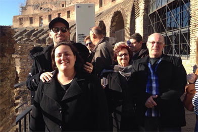
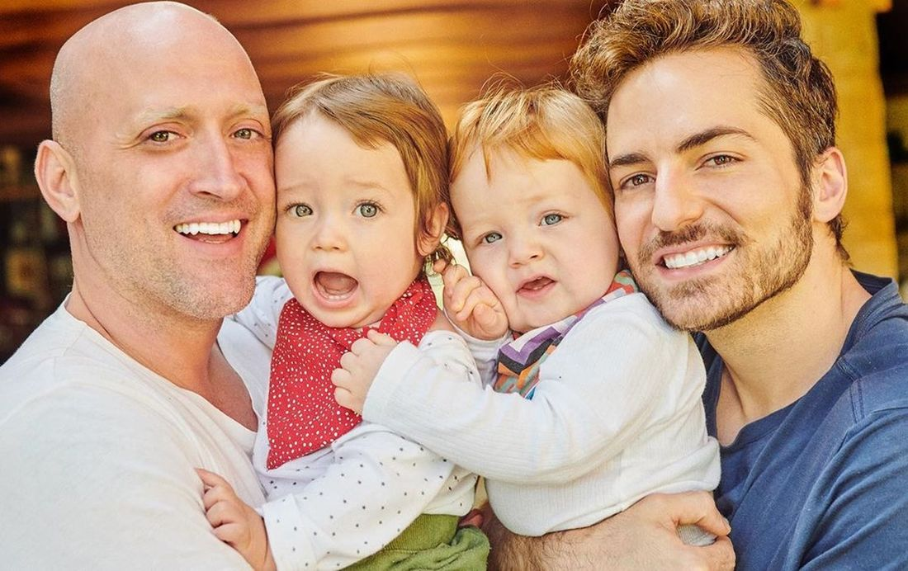
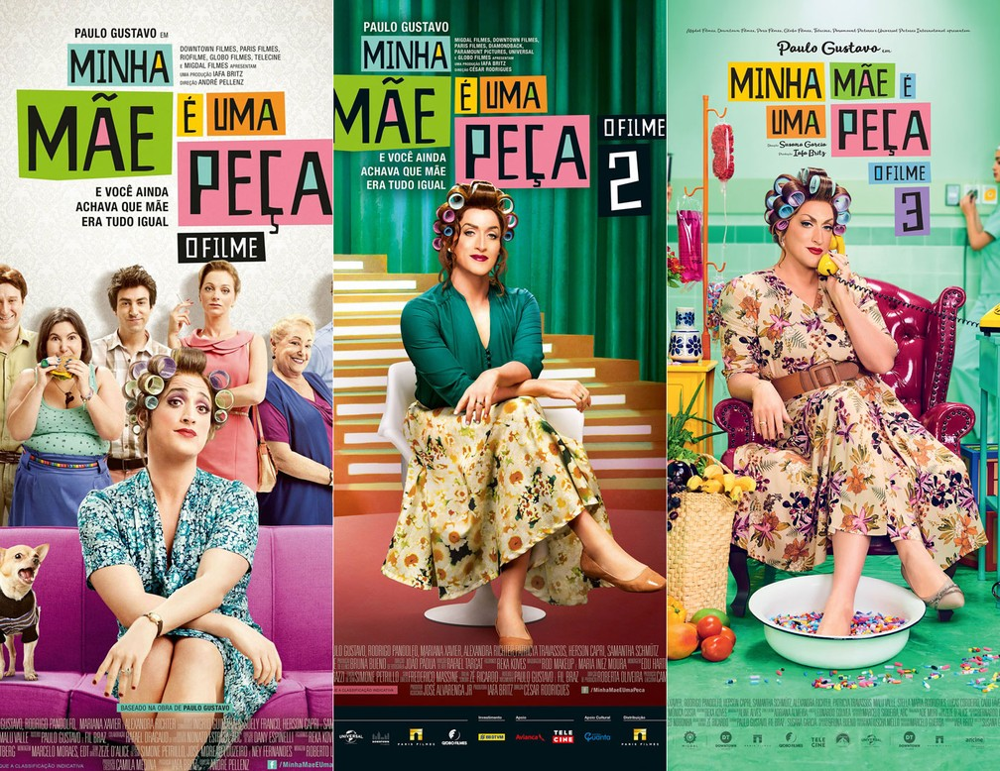

Vida Pessoal do Ator
Paulo Gustavo Amaral Monteiro de Barros foi um grande ator, apresentador,roteirista, diretor e humorista. Nasceu em 30 de outubro de 1978; em Niterói, Rio de Janeiro: sendo seus pais Déa Lúcia Vieira Amaral, Júlio Márcio Monteiro de Barros e sua irmã Ju Amaral. Escorpiano, foi criado em uma família de classe média,aos 42 anos tem 1,80 m de altura e olhos verdes. Além disso, apesar de ter adotado o visual careca, ele sempre teve cabelos castanhos quando criança. Paulo estudou no tradicional Colégio Salesiano durante o ensino fundamental. Mas, antes de decidir seguir a carreira artística, ele tentou outras experiências entrando para o curso de turismo, pensou até em seguir com a profissão. No entanto, depois de um tempo no curso, percebeu que não era o que queria fazer, então foi passar um tempo em Nova York. Assumidamente bissexual desde sua adolescência, se casou com Thales Bretas em 20 de dezembro de 2015. Através de uma barriga de aluguel, seriam pais de gêmeos (Gael e Flora), porém imfelizmente os bebês morreram em um aborto espontâneo. O casal até pensou em deistir de serem pais, mas em 18 de agosto de 2019, com outra barriga de aluguel, seus filhos nasceram, chamados Romeu e Gael, de barrigas de aluguel diferentes.
Paulo Gustavo era dono de uma fortuna e realizava doações com frequência para ajudar os necessitados. Segundo Padre Júlio Lancelotti, que atua diretamente em ações de caridade, Paulo doou 1,5 milhão para a construção de um hospital para tratar doentes de câncer.

Mapa da cidade natal
Paulo Gustavo nasceu no dia 30/10/1978, na cidade de Niterói no Rio de Janeiro. Aqui abaixo está o mapa para você conferir a cidade:
Filhos de Paulo
Mesmo com as críticas recebidas, o ator recebeu o apoio de muitas pessoas em suas redes sociais, além do apoio de sua família que sempre o aceitou. E principalmente, Paulo serve como inspiração para diversas pessoas que fazem parte da comunidade LGBTQIA +, mostrando que é possível serem aceitos, bem sucedidos e ainda formarem uma família linda se quiserem. Segundo Paulo Gustavo, geneticamente falando, Romeu é filho de Thales e o Gael é filho dele, pois foram produzidos cinco embriões com o sêmen de Paulo e mais cinco com o sêmen de Thales. Dessa forma, em cada barriga de aluguel foi feito a inseminação de um embrião. Por fim, Romeu nasceu dia 3 e Gael dia 13, nos Estados Unidos, após dois meses do nascimento dos filhos e tirar toda documentação necessária, Paulo e Thales voltam para o Brasil com os filhos. 
Carreira
Paulo Gustavo ganhou visibilidade no final de 2004, quando integrou o elenco da peça Surto, que foi a primeira peça em que participou. Além das peças de teatro, também fez pequenas participações em séries populares, como A Diarista e Sítio do Pica Pau Amarelo, ambos da Globo. Em 2006 estreou o espetáculo "Minha Mãe É uma Peça", que ganhou uma adaptação para o cinema em 2013, em que foi o autor e interpretou a mãe chamada Dona Hermínia. Somados, os três filmes de “Minha mãe é uma peça” venderam mais de 26 milhões de ingressos entre 2013 e 2020. Em 2011, ele tornou-se o apresentador do 220 Volts. Em junho de 2013, estreou na produção para TV o sitcom Vai que Cola, no Multishow, que ganhou uma adaptação para o cinema em 2015. Em 2014 o ator esteve em um novo programa, o reality Paulo Gustavo na Estrada, do Multishow. O ator iria expandir sua carreira à âmbito internacional, tendo assinado um contrato de cinco anos com a Amazon, para a criação de conteúdo para a plataforma de streaming Prime Video, com início previsto em 2022. Além disso, Paulo ganhou inumeros prêmios como Prêmio Shell(2006), Prêmio Extra de Televisão(2011), Grande Prêmio do Cinema Brasileiro(2014), Grande Prêmio do Cinema Brasileiro(2017).
Ver mais trabalhos de Paulo 
Morte de Paulo
O ator foi diagnosticado com Covid-19, sendo internado no Hospital Copa Star no dia 13 de março, em Copacabana, Rio de Janeiro. Paulo faz parte do grupo de risco, pois tem asma, devido a piora foi intubado na UTI, seu estado é crítico com complicações pulmonares. De acordo com o boletim médico divulgado dia 1º de abril, Paulo seguia em terapia intensiva e apresentava uma melhora evidente. No entanto, no dia seguinte, Thales anunciou que Paulo apresentou um agravamento no seu estado de saúde, por isso, foi submetido a uma terapia por ECMO (Oxigenação por Membrana Extracorpórea). Já no dia 3 de abril, o ator passou por uma pleuroscopia, procedimento que serve para a equipe médica ter uma melhor compreensão sobre a situação dos pulmões do paciente. Dessa forma, foi identificada uma fístula bronco-pleural, que impedia a adequada ventilação mecânica, sendo corrigida imediatamente. Porém, na terça-feira de 4 de maio de 2021, foi constatado o falecimento do ator por morte cerebral. Paulo Gustavo morreu com 42 anos de idade, deixando dois filhos e muita saudade.
A morte de Paulo Gustavo repercutiu no mundo artístico, político e intelectual, tanto no Brasil quanto no exterior. Por volta das 12 horas do dia 5 de maio, foi noticiado que o corpo de Paulo Gustavo seria cremado no dia seguinte em cerimônia restrita à família e a amigos próximos. No dia 6 de maio, por volta das as 8h40, o corpo de Paulo Gustavo chegou ao Cemitério Parque da Colina, na cidade de Niterói, e passou a ser velado no salão nobre.
Abaixo está o mapa do cemitério em que Paulo Gustavo foi velado:
Vídeo
Aqui a baixo está um vídeo que o Humor Multishow fez em homenagem ao Paulo Gustavo: